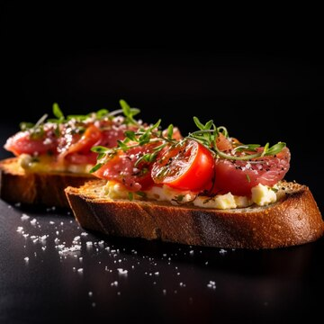
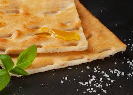
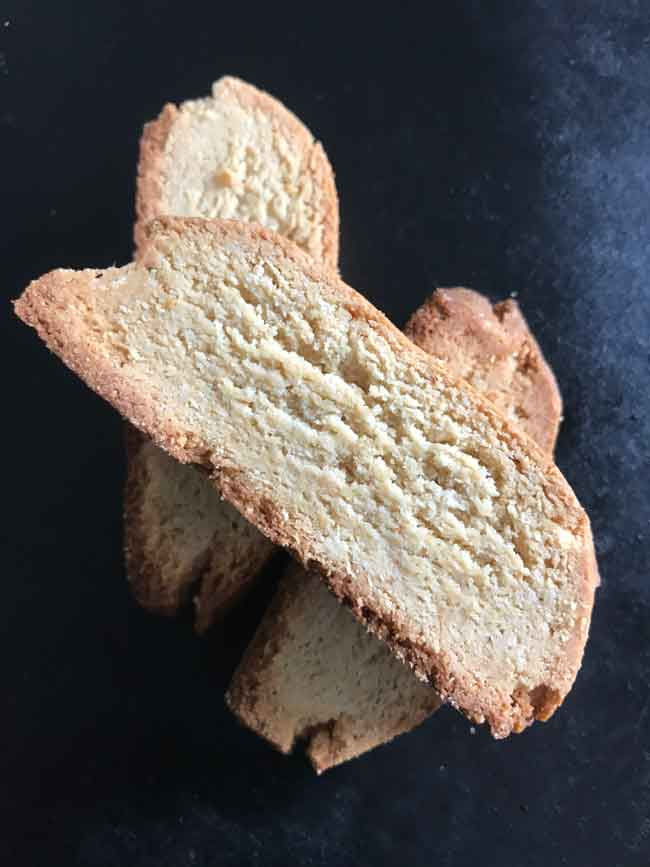

Antipasti
Antipasti are the appetizers in traditional Italian meals, served before the main courses. Their purpose is to stimulate the appetite. They usually consist of light bites like olives, cheese, cured meats, or toasted bread with fresh toppings. These dishes are often simple but flavorful, showcasing the freshness and quality of Italian ingredients.

Primi Piatti
Primi piatti are the first warm courses served after antipasti. They typically include pasta, risotto, gnocchi, or soups. While not the main dish, primi are often hearty and beloved for their wide variety of sauces and ingredients, ranging from light and fresh to rich and creamy.

Secondi Piatti
Secondi piatti are the main courses of an Italian meal, usually centered around meat, poultry, or fish. These dishes are often served with contorni (side dishes) such as vegetables or potatoes. Each region in Italy has its own specialties, reflecting local ingredients and traditional cooking styles.

Pizza & Traditional Breads
This category features various types of pizza and iconic Italian breads. Pizza, which originated in Naples, has evolved into many regional varieties across the country. Meanwhile, traditional breads like focaccia, piadina, and pane carasau reflect unique local baking traditions, often enjoyed as snacks or meal accompaniments.

Dolci
Dolci are the sweet endings to an Italian meal—beloved for their diversity, from creamy puddings to crisp pastries. Every region in Italy has its signature dessert, from Tiramisu in the north to Sfogliatella in the south. Many Italian desserts use classic ingredients like ricotta cheese, almonds, coffee, and chocolate to create indulgent flavors.

Bevande
Italian drinks include a variety of coffees, liqueurs, and refreshing beverages. Coffee culture is deeply rooted in Italy, with espresso as its symbol. On the other hand, drinks like Limoncello and Aperol Spritz reflect Italy’s relaxed lifestyle, often enjoyed during social moments. Bevande complete the full Italian dining experience.